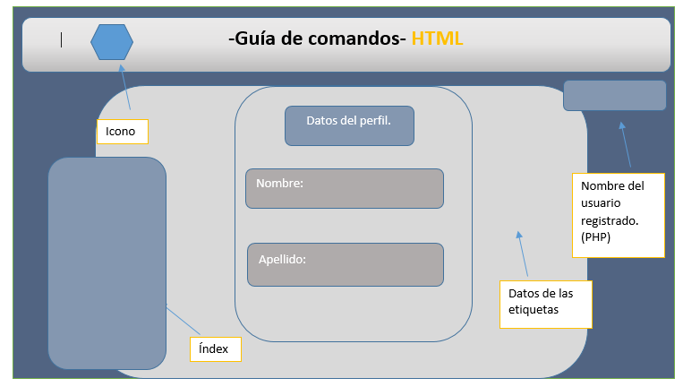

-Guia de comandos- HTML
OVI- DISEÑO DE MI SITIO WEB. CURSO: 301122_12
- UNAD -

- Colombia -
- Facultad Ingenierias -
Logo Universidad Nacional
MOCKUP-Sergio Andres Avila.

Este diseño de pagina esta pensado para brindar flexibilidad y comodidad al usuario final.
Esta pagina esta diseñada con 2 lenguajes de maquetación web
HTML 5 Y CSS.


MOCKUP-Tamaño ampliado.
¿Que es HTML?
Actualmente la mayoría de las personas han visto cientos de páginas web pero muchos se preguntarán ¿Qué es HTML? ¿Para qué me sirve? ¿Cómo funciona?
HTML no es un lenguaje de programación, esto debes tenerlo muy en claro desde el principio, HTML es un lenguaje de marcado de hipertexto o “HyperText Markup Language” por el desarrollo de sus iniciales en inglés, básicamente este lenguaje se escribe en su totalidad con elementos, estos elementos están constituidos por etiquetas, contenido y atributos, que explicaremos de una manera más detallada en algunas líneas más abajo.
HTML es un lenguaje que interpreta el navegador web para mostrar los sitios o aplicaciones web tal y como estamos acostumbrados.
¿Que es CSS?
CSS, es una tecnología que nos permite crear páginas web de una manera más exacta. Gracias a las CSS somos mucho más dueños de los resultados finales de la página, pudiendo hacer muchas cosas que no se podía hacer utilizando solamente HTML, como incluir márgenes, tipos de letra, fondos, colores...
CSS son las siglas de Cascading Style Sheets, en español Hojas de estilo en Cascada. En este reportaje vamos a ver algunos de los efectos que se pueden crear con las CSS sin necesidad de conocer la tecnología entera.
Sergio Andres Avila Moreno
Me permito presentar mi proyecto individual, creado con HTML 5 Y CSS, Esta pagina contiene Menus,divs, enlaces,diseños,Colores y desde mi perspectiva es agradable para el usuario. No uso colores fuertes debido a que intente en lo más posible No contrastar para generar un buen ambiente al usuario final..
Estudio ingenieria de sistemas en la Universidad nacional a distancia, Me matricule en el cead Jose Acevedo y Gomez, Por eso agregue el mapa de esta entidad en mi pagina, Tengo 21 años trabajo en una multinacional llamada Claro, Soy apasionado a las Bases de datos y al diseño web.
Espero haya sido de su agrado.
Tutorial HTML5.
Mapa UNAD José Acevedo Y Gomez.